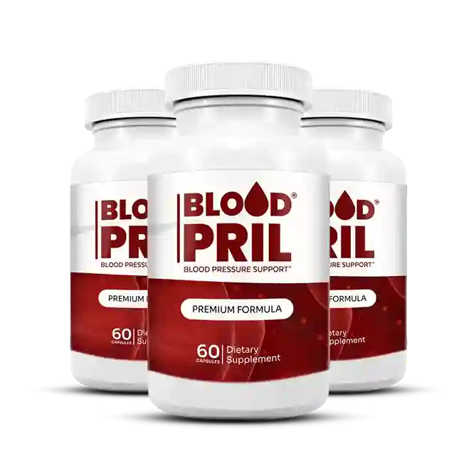
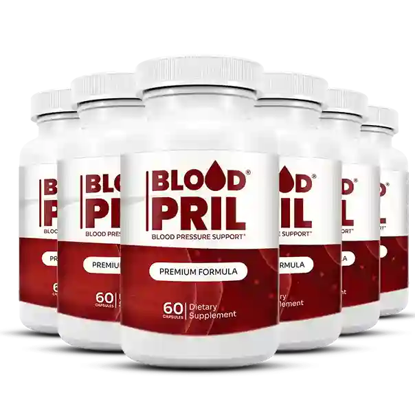
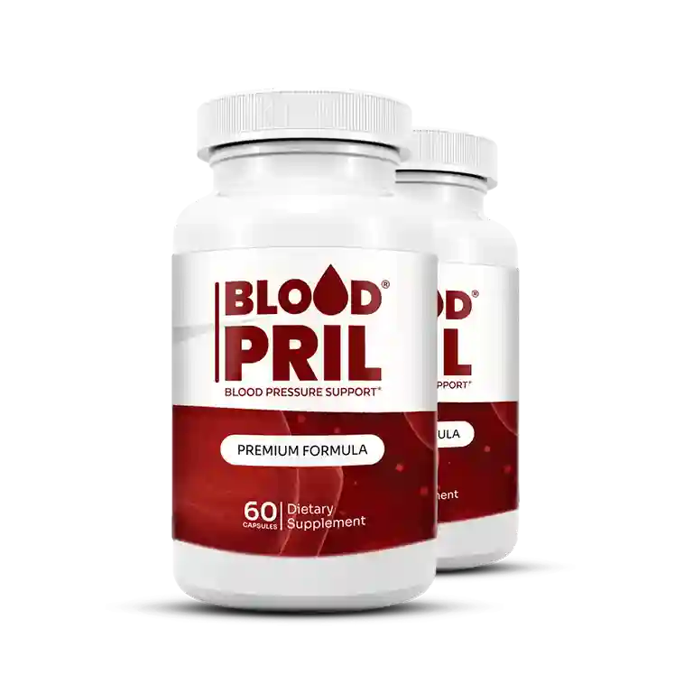

BloodPril is the official blood pressure support supplement powered by a triple amino acid complex — L-Arginine, L-Citrulline dl-Malate, and L-Arginine HCL — clinically recognized ingredients that fuel your body's natural nitric oxide production for healthier, more relaxed blood vessels.


BloodPril is a premium blood pressure support supplement crafted for adults who want a natural, evidence-informed approach to cardiovascular wellness. Unlike synthetic stimulants, BloodPril works with your body's own biochemistry — supplying the amino acid precursors your endothelium needs to produce nitric oxide (NO) on demand.
Nitric oxide is a signaling molecule your blood vessel walls produce to relax and dilate, allowing blood to move freely with less resistance. The National Heart, Lung and Blood Institute (NHLBI) recognizes reduced blood vessel flexibility as a key driver of elevated blood pressure — and BloodPril's formula is specifically designed to address this root mechanism.
Triple Amino Acid Formula: Three complementary forms of L-Arginine and L-Citrulline deliver sustained nitric oxide support across your entire day.
No Synthetic Stimulants: BloodPril relies on naturally occurring amino acids — not caffeine or synthetic compounds — making it suitable for long-term daily use.
USA-Manufactured Quality: Produced in an FDA-registered, GMP-certified facility with rigorous batch testing before every release.
Simple Daily Routine: Just one BloodPril capsule per day with water is all it takes to start supporting healthier blood pressure levels.
BloodPril's three-step mechanism works at the cellular level to maintain vascular flexibility and healthy circulation throughout the day.
L-Arginine and L-Citrulline dl-Malate are absorbed through your digestive tract and transported into your bloodstream, where they become available to endothelial cells lining your arteries.
Endothelial nitric oxide synthase (eNOS) converts L-Arginine into nitric oxide. Meanwhile, L-Citrulline is recycled back into L-Arginine by the kidneys — extending NO availability far beyond a single dose window.
Nitric oxide signals smooth muscle cells in arterial walls to relax and dilate. This vasodilation allows blood to flow more freely, reducing the pressure your heart must exert with each beat.
BloodPril delivers comprehensive cardiovascular support through a carefully engineered amino acid complex that works in harmony with your body.
BloodPril's core mission is to help your body maintain blood pressure already within a normal range through natural nitric oxide-driven vasodilation.
Relaxed, flexible arteries allow nutrient-rich, oxygenated blood to reach your heart, brain, and muscles more efficiently — leaving you feeling alert and energized.
Stiff arteries force the heart to work harder. BloodPril's amino acid complex helps maintain arterial elasticity, easing the workload on your cardiovascular system over time.
Improved cerebral blood flow — a natural consequence of better vascular tone — is associated with sharper focus, reduced mental fatigue, and clearer thinking throughout the day.
Cardiovascular tension can interrupt sleep quality. Users of BloodPril frequently report calmer evenings and more restorative sleep as their circulation improves over weeks of consistent use.
L-Arginine HCL provides a stabilized, steady-release form of arginine that keeps nitric oxide levels elevated throughout the day — unlike single-form supplements that peak and crash.
Every BloodPril capsule delivers three synergistic amino acids chosen for their unique roles in the nitric oxide pathway — each one addressing a different stage of cardiovascular support.
L-Arginine is the direct substrate for endothelial nitric oxide synthase (eNOS). When sufficient L-Arginine is present, your blood vessels can produce nitric oxide on demand — signaling smooth muscle to relax and blood vessels to dilate. Research published in peer-reviewed journals and cited by the National Library of Medicine supports L-Arginine's role in vascular health.
L-Citrulline is converted back into L-Arginine by the kidneys via the urea cycle, creating a self-renewing supply of nitric oxide precursors long after a single dose. When paired with Malate (malic acid), absorption and endurance effects are further enhanced. Studies reviewed by the American Heart Association highlight L-Citrulline's impact on arterial stiffness and blood pressure.
The hydrochloride (HCL) salt form of L-Arginine provides superior stability and a steadier release profile compared to free-form L-Arginine. This ensures your body has a continuous background supply of the amino acid throughout the day, maintaining consistent eNOS activity and preventing the "dip" that can occur with single-form arginine supplements. The CDC emphasizes consistent daily cardiovascular support as essential for long-term blood pressure management.

BloodPril's formulation draws on decades of peer-reviewed cardiovascular science examining how amino acids affect blood vessel function, nitric oxide signaling, and arterial health.
L-Arginine and blood pressure: Multiple systematic reviews — including studies indexed by the National Library of Medicine — show L-Arginine supplementation is associated with meaningful reductions in systolic blood pressure in adults with elevated readings.
L-Citrulline and arterial stiffness: Research cited by the American Heart Association Journals demonstrates that L-Citrulline supplementation reduces aortic stiffness and lowers systolic blood pressure in prehypertensive adults over 8 weeks of use.
Nitric oxide and endothelial health: The National Institutes of Health recognizes nitric oxide as a critical regulator of vascular tone — and amino acid precursors as the primary dietary pathway to supporting its natural production.
GMP-certified manufacturing: Every BloodPril batch is produced under Good Manufacturing Practice standards in a US facility registered with the FDA, ensuring purity, potency, and consistency in every capsule.
Thousands of verified customers across the United States trust BloodPril as their daily blood pressure support supplement.
I tried several blood pressure supplements before BloodPril, and nothing came close. Within three weeks I noticed the heavy-head feeling in the afternoons had completely disappeared. My energy is back and I actually enjoy my morning walks again. I'm already on my second 6-bottle order.
My cardiologist knows I'm taking BloodPril and was pleased to see my blood pressure trending better at my last two checkups. The 60-day guarantee gave me the confidence to commit to a full 3 months, and I'm glad I did. Sleep quality has improved dramatically as well.
I'm 61 years old and have been cautious about supplements my whole life. BloodPril won me over because it uses real amino acids — not stimulants. After 90 days on the 6-bottle BloodPril package my doctor commented on how relaxed my readings looked. I was thrilled.
Consistent daily use is the key to BloodPril's effectiveness. Here is what most customers experience over their first 90 days.
BloodPril begins building amino acid reserves. Many users notice improved morning energy and a subtle reduction in afternoon fatigue as nitric oxide production begins to stabilize.
Vascular tone begins to improve as sustained nitric oxide levels help blood vessel walls relax more consistently. Users frequently report reduced "head pressure" and clearer thinking.
Arterial flexibility continues to improve. Sleep quality, daytime energy, and circulation during physical activity all show measurable progress for most BloodPril users at this stage.
Long-term cardiovascular benefits consolidate. The 3- and 6-bottle BloodPril packages ensure uninterrupted daily support — the most common reason customers see the best results at 90 days.
Every order is backed by a 60-day money-back guarantee. Larger packages include free US shipping and exclusive digital bonuses.
🔒 Secure checkout · No subscription
🔒 Secure checkout · One-time purchase · No auto-renewal
🔒 Secure checkout · No subscription
We stand behind every bottle of BloodPril with our iron-clad 60-day satisfaction guarantee. If you are not completely satisfied with your BloodPril blood pressure supplement results for any reason — even if the bottles are empty — simply contact us within 60 days of purchase and receive a full, hassle-free refund.
This guarantee exists because we are confident in what BloodPril can do for your cardiovascular health when taken consistently. There is no risk. Only results.
Try BloodPril Risk-Free →Instant digital downloads — delivered with your BloodPril 3- or 6-bottle order. Total value: over $320.
Discover 12 common medications that may worsen insulin resistance, plus practical strategies to support healthy blood glucose levels naturally.
Value: $67 — Free with BloodPrilA comprehensive e-book of home-based wellness recipes targeting liver health, visual acuity, and whole-body vitamin replenishment.
Value: $49 — Free with BloodPrilScience-backed daily habits to rev up your metabolic rate, reduce visceral fat, and stabilize blood sugar — complementing your BloodPril cardiovascular routine.
Value: $59 — Free with BloodPrilTargeted guidance for joint discomfort and peripheral nerve support — helping you feel more comfortable in your body as your cardiovascular health improves.
Value: $67 — Free with BloodPrilHeart-friendly, low-glycemic recipes with weekly meal planning tools — a perfect dietary companion to your daily BloodPril blood pressure supplement routine.
Value: $39 — Free with BloodPrilCalming herbal drink recipes and bedtime rituals designed to deepen sleep quality — because restorative sleep is one of the most powerful tools for cardiovascular health.
Value: $39 — Free with BloodPrilEverything you need to know about the official BloodPril blood pressure supplement before you order.